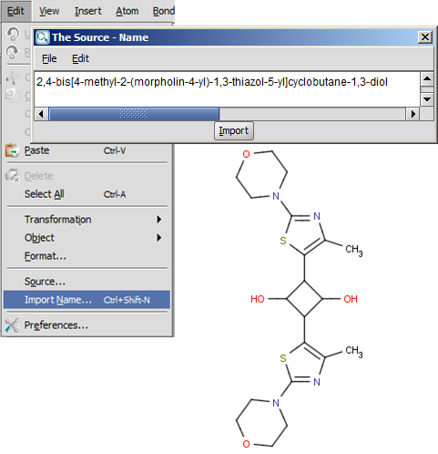

Name to Structure Conversion
ChemAxon’s naming toolkit capabilities allow you to generate chemical structures from IUPAC, trivial, drug, CAS names and from CAS numbers.
Supported names include
- Chains, Monocycles
- Retained/traditional names for ring systems with and without heteroatoms
- Spiro ring systems
- All cases of von Baeyer nomenclature for bridged ring systems
- Fused ring systems
- Ethers
- Common characteristic groups
- Ionic compounds
- Compounds with one radical
- Unlimited number of atoms and rings
- All atom types
- Substitutive nomenclature
- Stereochemistry
- CAS numbers (Note, this feature uses a Web service.)
Current limitations
- Molecules containing multiple radicals (e.g.
ethane-1,2-diyl) are not supported yet.
- Names representing isotopes are not supported yet
.
Notes
- You can extend the name to structure conversion by creating a custom dictionary file. Detailed description of the setting up of a custom dictionary is described in this page
There are different ways how you can import a name directly into MarvinSketch and convert it to a chemical structure.
- A simple method is to select the name in the text of any page and drag&drop or copy&paste
it to MarvinSketch.
OR
- Select the "Import Name" (Ctrl+Shift+N) option from the Edit menu, and write the name into the text field and click the "Import" button (Ctrl+I).

Open a text file (.name) containing IUPAC names (one per row). MarvinView will open
all the structures. Opening the same file in MarvinSketch, the program will ask you to select one structure (by its index number).
As a commandline tool, you can use MolConverter for name to structure conversion.
Examples:
- Converting "test.name" name file to MOL file:
molconvert mol test.name -o test.mol
- Converting "test.name" name file to "test.smi" SMILES file which also contains the name of the structures:
molconvert smiles:n test.name>test.smi
Marvin can also convert structures to names.
License informations
Name import is only available for a single molecule with the free MarvinSketch desktop
application. For batch conversion (with MarvinView, MolConverter, API, ...) you need the "Name to Structure" licence.